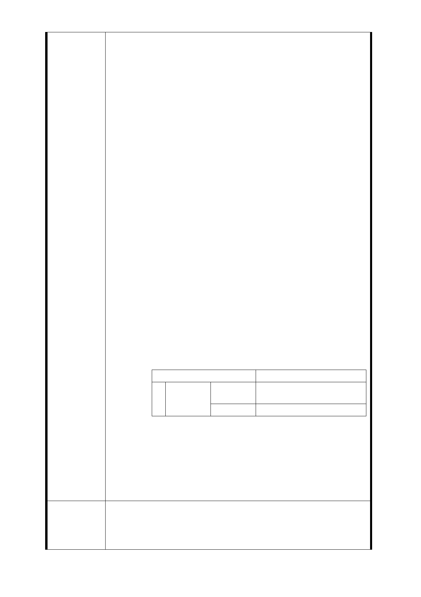

權人聯合訴求，還我土地聯合陳情書。
壹、 案情說明
一、 臺北市政府捷運局 94 年 5 月 18 日 1900 時於萬華區
行政中心召開萬大－中和－樹林方案路線方案示意
圖乙 4 站於萬大、東園國小附近設站。
二、 臺北市府萬大－中和－樹林聯合規劃說明（CEC），95
年－200 年報告書內容第十二章、地 12-99 頁、第 4.
乙 4 車站：摘述如下：
（1） 車站位置及地面層配置建議：
本車站位於萬大路於長泰街交叉口東南側之萬大路下，規劃
為一座地下兩層之島式月台車站；車站出入口建議設於萬大
路西側之東園國小用地上，以有償撥用方式取得，另一出入
口建議於萬大路東南側之私人土地上…、詳如配置圖 12.3.6-3
乙 4 車站位置及地面層配置建議。
（2） 車站出入口用地規劃建議：
車站出入口用地建議設於萬大路兩側，其中出入口 B 用地建
議利用車站西側鄰東園國小用地，建議以有償撥用方式取得
，另出入口 A 用地建議設於車站東南側鄰萬大路之東南側用
地…。
三、 第十五章、第 15-17 頁：對周邊環境評估，摘述如下
：
◆乙 4 站
乙 4 站離開基地位於台北市萬華區萬大路，基地周邊有東園
國小、萬大國小、光仁小學等多所國中小學，以及麥當勞、
我家牛排、丹堤咖啡等多家連鎖餐飲業（本案陳情戶現住位
置），生活機能相當健全，且因地處東園商圈。
四、 第十五章、第 15-18 頁：第 15.1.5-4 乙 4 車站聯合開
發構想表如下
項目
說明
西 基地資料 基地位置 台北市萬華區萬大路與東園
側 街口北側
基地面積 3100 平方公尺（約 938 坪）
五、 臺北市政府捷運局，94 年迄今再未曾召集 64 住戶現
勘，未曾召集 64 住戶開會，100 年 12 月 2 日及 7 日
，一紙公文，於萬大國小大禮堂、萬華區行政中心、
告訴住戶已在公告；擅自變更位置於現在萬大路 423
巷 10 弄 2 號-22 號至 449 巷 1-7 號（暨 425-1 號-447
號）要求住戶聯合構建，如不配合擬強制徵收，拆除
房屋，不顧百姓 60 餘戶，1000 人生計生死。
貳、 聯合陳情訴求：
建議辦法
一、
訴求一：臺北市政府捷運局未依法行政，不符合行政
程序法，於 100 年 11 月 25 日上午於華中橋辦理開工
典禮，卻在 11 月 28 日才辦理公開展閱，12 月 2 日、7
- 140 -